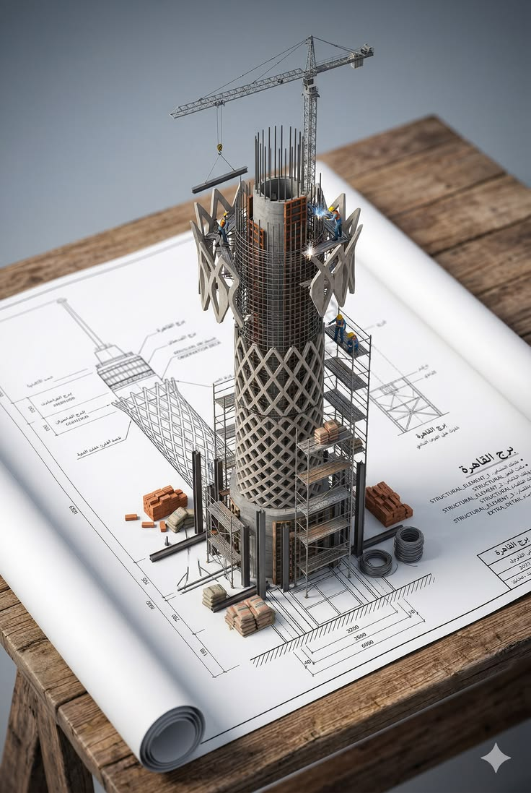
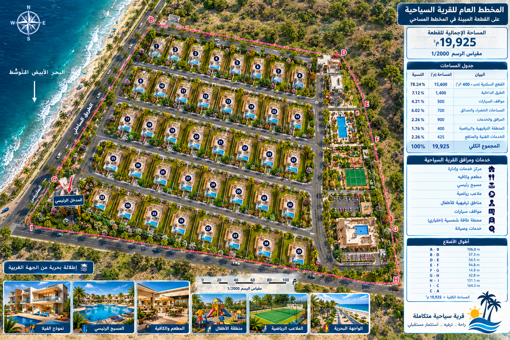
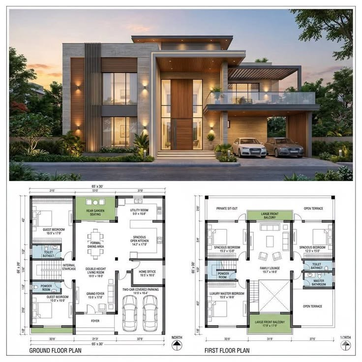

أتمتة بايثون
سكربتات بايثون لتنظيف وتحليل وتصور البيانات المكانية وبيانات مشاريع التخطيط العمراني، مع معالجة القيم الناقصة والصيغ غير المنتظمة.
أمتلك خبرة تتجاوز 20 عاماً في القطاع العام، وأشغل حالياً منصب مدير التخطيط في مجلس مدينة جبلة. لدي خلفية قوية في التخطيط المكاني، التصميم الإنشائي، وإدارة المشاريع.
شغوف بالذكاء الاصطناعي ومتمكن من برمجة بايثون، أسعى لدمج فهمي العميق للبيئات المادية والإنشائية مع المهارات التقنية للانتقال إلى مجال نمذجة ومحاكاة البيئات ثلاثية الأبعاد (Real-to-Sim).

عاماً من الخبرةخبرة
مشروع منجزمشاريع
التزام بالجودةجودة
نمذجة ومحاكاةنمذجة
أنا المهندس باسم اسبر، مهندس مدني وإنشائي بخبرة تتجاوز 20 عاماً في القطاع العام، ومدير التخطيط في مجلس مدينة جبلة. تشمل خبرتي التخطيط العمراني والمكاني، والتصميم الإنشائي، وإدارة المشاريع البلدية، والنمذجة ثلاثية الأبعاد باستخدام AutoCAD وRevit وETABS، عبر أكثر من 100 مشروع منجز. أجمع بين هذه الخلفية الهندسية وبين برمجة بايثون وأدوات الذكاء الاصطناعي لمعالجة بيانات التخطيط بسرعة ودقة أعلى. وأعمل حالياً على تطوير منهجية Real-to-Sim التي تحوّل المواقع الحقيقية إلى بيئات ثلاثية الأبعاد دقيقة ونماذج توأم رقمي. يقوم عملي على ثلاثة مبادئ: الامتثال للأنظمة، والسلامة الإنشائية، ودراسات الجدوى الموثقة، بحيث يستند كل قرار إلى بيانات موثوقة.
قيادة مبادرات التخطيط الاستراتيجي والتنمية الحضرية، وإدارة البيانات المكانية وخرائط المشاريع الكبرى للمدينة.
تحويل التصاميم المعمارية والإنشائية إلى مشاريع قابلة للتنفيذ، بتحليل دقيق عبر ETABS وضمان السلامة الإنشائية.
الإشراف الفني على المشاريع الهندسة البلدية الكبرى ومشاريع البنية التحتية، من الدراسات و التصميم حتى التنفيذ والتسليم مع التنسيق بين الأقسام الهندسية.
إنشاء تمثيلات ثلاثية الأبعاد دقيقة للمواقع الحقيقية باستخدام AutoCAD وRevit،كأساس لبيئات المحاكاة والتوأم الرقمي.
سكربتات بايثون لتنظيف وتحليل وتصور مجموعات البيانات الكبيرة المتعلقة بالتخطيط والإنشاء، لتوفير الوقت وتقليل الأخطاء اليدوية.
دراسات هندسية شاملة وتحليل للجدوى وتقييمات بيئية لمشاريع تخطيط المدن والبنية التحتية، تنتهي بتوصيات واضحة تدعم اتخاذ القرار.

(2023 - الآن) قيادة مبادرات التخطيط الحضري الاستراتيجي، وإدارة البيانات المكانية وخرائط البنية التحتية، وإنشاء تمثيلات 3D للمدينة (Digital Twin).

(2015 - 2023) الإشراف الفني على المشاريع الهندسية البلدية الكبرى وتطوير البنية التحتية، والتنسيق بين الأقسام الهندسية لضمان دقة تصميمات 3D.

(قبل 2015) إدارة فرق المشاريع للإشراف على دورة حياة المشاريع الهندسية من الفكرة حتى التنفيذ، وضمان مطابقة المواصفات الإنشائية.
تطبيق برمجة Python لأتمتة معالجة وتحليل وتصور مجموعات البيانات الضخمة المتعلقة بالتخطيط العمراني والمشاريع الإنشائية.

استخدام أدوات CAD و Revit لإنشاء تمثيلات مكانية دقيقة للمواقع المادية، بما يعكس سير العمل الأساسي لبيئات المحاكاة (Real-to-Sim).
القرار الهندسي أولاً، والذكاء الاصطناعي لتسريع المهام المتكررة ورفع دقة المخرجات.
سكربتات بايثون لتنظيف وتحليل وتصور البيانات المكانية وبيانات مشاريع التخطيط العمراني، مع معالجة القيم الناقصة والصيغ غير المنتظمة.
ترجمة تقنية بين العربية والإنكليزية للتقارير والمواصفات الهندسية، بمصطلحات إنشائية دقيقة ومراجعة هندسية قبل التسليم.
تحويل المواقع الحقيقية إلى نماذج ثلاثية الأبعاد دقيقة باستخدام AutoCAD وRevit، كأساس لبيئات المحاكاة والتوأم الرقمي.